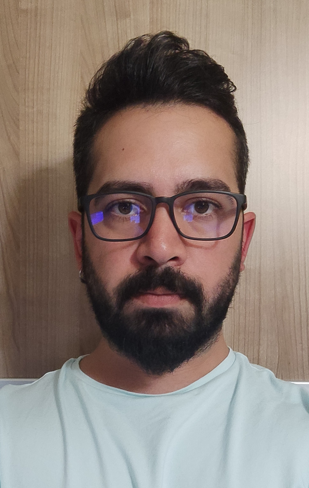

Murat Can OZCAN

Summary
I am an experienced geophysical engineer who finishes what he starts and communicates well with people.
Education
Engineering Faculty, Geophysical Engineering Department, Ankara University 2018-2022
Bachelor's Degree: 3.28/4.00 (7th Term Top Scoring Student in the Department)
Work Experience
- TUBITAK STAR 2247/C Trainee Researcher Scholarship - "Study of the Shell Structure of Northwest Anatolia"
February 2020 - September 2021
- Republic of Turkiye Highways 4. Department Internship
July 2021 - August 2021
- Ankara University Geophysical Engineering Field Internship
August 2021 – September 2021
- ARE GEOTECHNICAL (while in college)
October 2021 - March 2022
- Preparing reports
- Data entry and dot marking on the ministry's website
- Ground survey field works (MASW-REMI-VED-MICROTREMOR)
- LEMNIS EARTTH SCIENCES
March 2022 - July 2022
- Magnetotelluric (MT) method field works
- Data processing from harvested datas
- ENERSON ENGINEERING
July 2022 - October 2022
- Induced polarization (IP) method field works
- Data processing from harvested datas
Skills
- Ability to plan and design
- Preparing an effective work in plans and projects
- Numerical and analytical thinking
- Not refraining from turning to diffrerent options to get the job done
Languages - Driving License
Mother Language: Turkish
Foreign Language: English - C1(still in progress)
B Class
Other